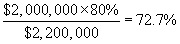
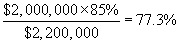

(a)
The contracting officer must ensure that the liquidation rate is-
(1)
High enough to result in Government recoupment of the applicable progress payments on each billing; and
(2)
Supported by documentation included in the administration office contract file.
(b)
The minimum liquidation rate is the expected progress payments divided by the contract price.Each of these factors is discussed below:
(1)
The contracting officer must compute the expected progress payments by multiplying the estimated cost of performing the contract by the progress payment rate.
(2)
For purposes of computing the liquidation rate, the contracting officer may adjust the estimated cost and the contract price to include the estimated value of any work authorized but not yet priced and any projected economic adjustments; however, the contracting officer’s adjustment must not exceed the Government’s estimate of the price of all authorized work or the funds obligated for the contract.
(3)
The following are examples of the computation. Assuming an estimated price of $2,200,000 and total estimated costs eligible for progress payments of $2,000,000:
(i)
If the progress payment rate is 80 percent, the minimum liquidation rate should be 72.7 percent, computed as follows:

(ii)
If the progress payment rate is 85 percent, the minimum liquidation rate should be 77.3 percent, computed as follows:

(4)
Minimum liquidation rates will generally be expressed to tenths of apercent. Decimals between tenths will be rounded up to the next highest tenth (not necessarily the nearest tenth), since rounding down would produce a rate below the minimum rate calculated.